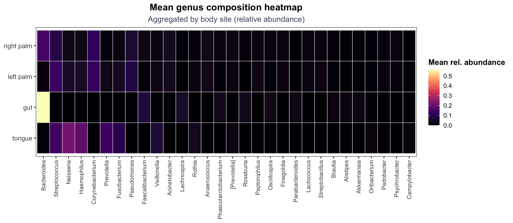

ps <- base::readRDS("data/moving-pictures-ps.rds")Heatmaps and Patterns
Heatmaps summarize many taxa across many samples at once.
They are useful for pattern discovery, but they are also easy to overread. A heatmap is a visualization of a transformed matrix, not a direct picture of biology.
This chapter focuses on:
- choosing a transformation appropriate for heatmaps
- selecting informative taxa (not just the rarest or noisiest)
- reading clustering and patterns responsibly
- avoiding common heatmap interpretation traps
Load data
A CDI plotting theme for this chapter
cdi_teal <- "#036281"
cdi_yellow <- "#f7c546"
cdi_muted <- "#475569"
cdi_plot_theme <- function(base_size = 13) {
ggplot2::theme_bw(base_size = base_size) +
ggplot2::theme(
plot.title = ggplot2::element_text(face = "bold", hjust = 0.5),
plot.subtitle = ggplot2::element_text(color = cdi_muted, hjust = 0.5),
panel.grid.minor = ggplot2::element_blank()
)
}Decide what to heatmap
Heatmaps work best when the matrix:
- has been transformed (raw counts are dominated by sequencing depth)
- has a limited number of taxa (readable signal)
- is aligned to metadata (so patterns can be interpreted)
In this guide we will:
- Convert counts to relative abundance
- Aggregate to the Genus level
- Select the top genera by mean relative abundance
- Visualize patterns across body site as a compact heatmap
Transform and aggregate to genus
ps_rel <- phyloseq::transform_sample_counts(ps, function(x) x / sum(x))
ps_genus <- phyloseq::tax_glom(ps_rel, taxrank = "Genus")
ps_genus <- phyloseq::subset_taxa(ps_genus, !is.na(Genus))
phyloseq::ntaxa(ps_genus)[1] 197Select top genera
top_n <- 30
genus_mean <- phyloseq::taxa_sums(ps_genus) / phyloseq::nsamples(ps_genus)
top_genera <- names(sort(genus_mean, decreasing = TRUE))[seq_len(top_n)]
ps_top <- phyloseq::prune_taxa(top_genera, ps_genus)
phyloseq::ntaxa(ps_top)[1] 30Build a compact matrix for visualization
We will compute mean relative abundance per body site and genus. This reduces clutter while keeping patterns interpretable.
df_comp <- phyloseq::psmelt(ps_top)
# Standardize body site column name (handles `body-site`, `body.site`, `body_site`)
cols <- names(df_comp)
body_col <- intersect(c("body-site", "body.site", "body_site"), cols)
if (length(body_col) == 0) {
stop("Body site column not found. Available columns: ", paste(cols, collapse = ", "))
}
df_comp$body_site <- df_comp[[body_col[1]]]
df_mean <- df_comp |>
dplyr::filter(!is.na(body_site)) |>
dplyr::group_by(body_site, Genus) |>
dplyr::summarise(mean_abundance = mean(Abundance, na.rm = TRUE), .groups = "drop")
# Order genera by global mean abundance for more stable reading
genus_order <- df_mean |>
dplyr::group_by(Genus) |>
dplyr::summarise(global_mean = mean(mean_abundance, na.rm = TRUE), .groups = "drop") |>
dplyr::arrange(dplyr::desc(global_mean)) |>
dplyr::pull(Genus)
df_mean$Genus <- factor(df_mean$Genus, levels = genus_order)
# Order body sites by total mean abundance
body_order <- df_mean |>
dplyr::group_by(body_site) |>
dplyr::summarise(total = sum(mean_abundance, na.rm = TRUE), .groups = "drop") |>
dplyr::arrange(dplyr::desc(total)) |>
dplyr::pull(body_site)
df_mean$body_site <- factor(df_mean$body_site, levels = body_order)
# Export for reproducibility
base::dir.create("outputs/tables", recursive = TRUE, showWarnings = FALSE)
readr::write_csv(df_mean, "outputs/tables/heatmap-mean-body-site-genus.csv")Heatmap of mean genus composition by body site
We use a viridis scale (option "magma") because it provides strong contrast and is broadly readable.
ggplot2::ggplot(df_mean, ggplot2::aes(x = Genus, y = body_site, fill = mean_abundance)) +
ggplot2::geom_tile(color = "white", linewidth = 0.25) +
ggplot2::scale_fill_viridis_c(option = "magma", name = "Mean rel. abundance") +
ggplot2::labs(
title = "Mean genus composition heatmap",
subtitle = "Aggregated by body site (relative abundance)"
) +
ggplot2::theme_bw(base_size = 12) +
ggplot2::theme(
plot.title = ggplot2::element_text(face = "bold", hjust = 0.5),
plot.subtitle = ggplot2::element_text(color = cdi_muted, hjust = 0.5),
axis.title = ggplot2::element_blank(),
axis.text.x = ggplot2::element_text(angle = 90, vjust = 0.5, hjust = 1, size = 9),
axis.text.y = ggplot2::element_text(size = 10),
panel.grid = ggplot2::element_blank(),
legend.title = ggplot2::element_text(face = "bold"),
legend.position = "right"
)
Avoid common heatmap traps
Heatmaps can be misleading when:
- taxa are too numerous (pattern becomes noise)
- transformation choices are not stated
- clustering is overinterpreted as causation
- groups are averaged without acknowledging within-group variation